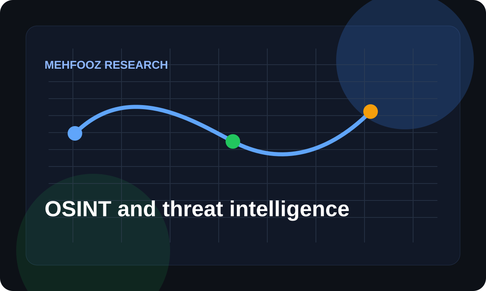
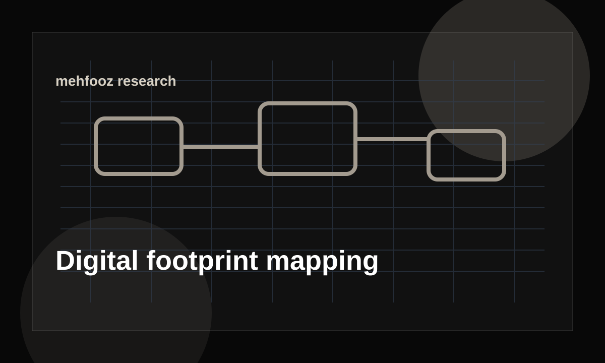
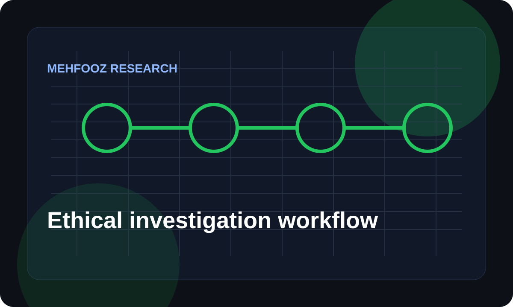

Modeled from Framer reference goals and community program planning
Mehfooz Internet
Pioneering responsible digital experiences
Mehfooz brings culturally tailored digital literacy, misinformation resilience, and ethical public-source intelligence workflows to communities and organizations that need clarity online.
Public Signal Desk
Demo environment
Composite community risk
51
Down 7 points after source review
High confidence sources52%
Items needing review17
Reports prepared38
Featured focus
Community LearningDigital SafetyMisinformation ResponseOSINT AnalysisThreat IntelligenceReporting
Community, campus, Ulema, DigiSaheli, resource hub, and more
Structured collection, enrichment, reporting, and risk scoring
No exploit steps, credential collection, or unlawful surveillance
Our programs
Built with a focus on learning, engagement, and innovation
The Framer reference shaped the program structure. This rebuild keeps the community mission while making each pathway clearer and more operational.
Community Engagement Program
Equips local leaders with practical digital safety lessons, misinformation response playbooks, and accessible workshop materials.
- Village-level workshops
- Local-language safety guides
- Trusted referral pathways
Ulema Training
Supports religious and community leaders with careful guidance for verifying information and reducing online rumor spread.
- Verification checklists
- Responsible sharing modules
- Community Q&A sessions
Campus Program
Helps students understand social media manipulation, digital footprints, privacy settings, and safe reporting practices.
- Student ambassador kits
- Scenario labs
- Peer mentoring
Virtual Community Events
Runs live and recorded sessions for communities with limited access to in-person training or reliable connectivity.
- Recorded lessons
- Live office hours
- Offline follow-up packs
DigiSaheli
Creates safer participation pathways for women through privacy education, harassment response, and practical confidence building.
- Privacy clinics
- Reporting support
- Mentor circles
Digital Learning Hub
A modular learning library for digital literacy, misinformation awareness, cyber hygiene, and ethical investigation basics.
- Mini courses
- Knowledge checks
- Downloadable resources
OSINT analysis
From public signals to responsible decisions
Mehfooz uses defensive public-source analysis to help teams understand misinformation, impersonation, digital exposure, and community risk.
- Use public, lawful, proportionate sources only.
- Minimize personal data and avoid doxxing or harassment.
- Separate verified facts from analyst assessments.
- Document confidence, uncertainty, and source limitations.
- Focus on protection, education, and responsible response.
Threat category distribution
A quick view of common issue types in a demo monitoring queue.
Source reliability breakdown
Shows why claims need context before they become recommendations.
Investigation workflow
A careful path from question to report
Every step is built around public sources, clear documentation, and defensive outcomes.
-
01
Frame the question
Clarify the decision the investigation needs to support, the communities affected, and the boundaries of the work.
-
02
Collect public signals
Gather public posts, domains, official notices, web pages, and media references using a documented collection plan.
-
03
Enrich and score
Compare signals against corroborating sources, rate reliability, and flag sensitive information for minimization.
-
04
Analyze patterns
Build timelines, category breakdowns, and relationship maps that help teams understand risk without overclaiming.
-
05
Report responsibly
Deliver clear findings, confidence levels, recommended actions, and limitations so stakeholders can respond safely.
FAQ
Insights and clarifications
Straight answers for partners, communities, and teams evaluating Mehfooz.
Mehfooz combines community education, source verification workflows, and carefully explained public-source analysis so people can pause, verify, and respond without amplifying false claims.
Yes. The site presents defensive, public-source methods only. It avoids exploit steps, evasion tactics, credential collection, private surveillance, or identifying private people without a legitimate protective purpose.
The program model supports offline resource packs, community learning hubs, and low-bandwidth delivery so training can continue where connectivity is inconsistent.
Community organizations, schools, civic groups, newsrooms, and small teams that need practical digital safety education or defensive public-source intelligence support.
User stories
How people feel safer with Mehfooz
The strongest part of Mehfooz is that it explains digital safety in language our community already understands.
The investigation workflow makes it easier to separate rumor, weak signals, and confirmed facts before sharing anything.
A practical resource hub for people who want online safety to feel less abstract and more doable.
Blog
Explore digital resilience insights
Professional notes on ethical OSINT, digital footprint mapping, risk scoring, and community safety.

How OSINT Supports Modern Threat Intelligence
A practical look at how public-source context helps teams understand risk without overreaching or turning analysis into surveillance.
Read article
Digital Footprint Mapping for Organizations
How small teams can review their public presence, reduce confusion, and close trust gaps before attackers or rumor networks exploit them.
Read article
Building an Ethical Investigation Workflow
A defensive investigation workflow that keeps public-source work scoped, documented, and respectful of the people affected.
Read article
Ready to build resilience?
Start a conversation